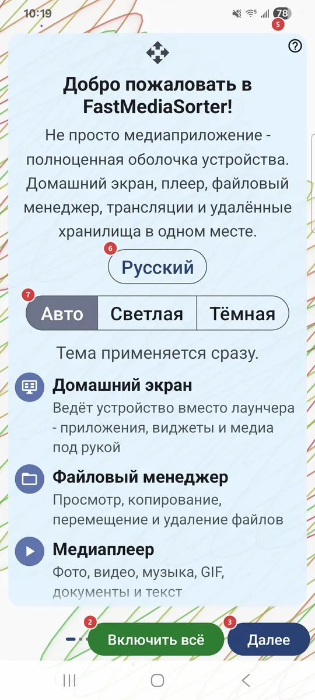
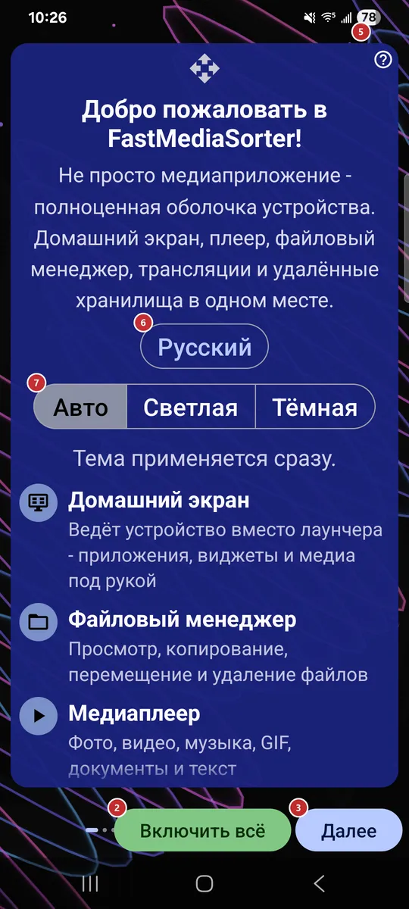

9Основное окноВыбирает, чем будет приложение при запуске: домашним экраном устройства, рабочим столом внутри приложения или списком ресурсов.
Этот выбор есть только в версиях, где есть домашний экран. Рекомендуемый вариант отмечен.
Мастер приветствия запускается при первом старте и проводит вас через язык, тему, профиль устройства, сетевые источники, возможности, разрешения и плеер по умолчанию. Позже его можно открыть снова из настроек.


На первой странице кнопка скрыта: возвращаться некуда.
Кнопка есть только на первой странице. Сначала приложение объясняет, что произойдёт, затем просит подтвердить профиль устройства и лишь после этого включает всё, запрашивает разрешения и выбор приложения по умолчанию, а в конце завершает настройку. Страницы между ними пропускаются.
На последней странице вместо неё появляется «Готово».
Разрешения выдаются на отдельной странице, поэтому «Готово» больше ничего не спрашивает. Кнопка появляется на последней странице вместо «Далее».
Вы узнаете, в каком порядке обычно проходят мастер и что делает каждый элемент.
Мастер перезагрузится на выбранном языке. Язык можно сменить позже в настройках.
«Авто» следует за устройством. Тема применяется сразу, так что результат виден тут же.
Плитки есть для личного смартфона, планшета, ТВ-приставки, автомагнитолы, фоторамки, электронной книги и не только; подходящая лучше всего отмечена как рекомендуемая. Профиль настраивает сразу много значений по умолчанию. «Другой / Без изменений» оставляет настройки как есть.
Этот выбор есть только в версиях, где есть домашний экран. Рекомендуемый вариант отмечен.
Например: общая папка на компьютере с Windows, NAS вроде Synology или QNAP, USB-диск, подключённый к роутеру.
Например: хостинг по FTP, собственный домашний сервер по SFTP, камера, которая выгружает снимки в папку FTP.
Например: войдите в Google Drive один раз и открывайте резервную копию фотографий как обычную папку. В версиях без поддержки облака эта строка скрыта.
Если ваши медиа лежат на ПК с Windows, компаньон в пару кликов делится этими папками с устройством, без настройки сервера.
Загляните, когда нужно переносить файлы между своими устройствами.
Переключатель лишь разрешает режим, а включать его нужно отдельно для каждого ресурса.
Воспроизведение музыки и аудио, сортировка треков по папкам.
Воспроизведение видео и сортировка роликов встроенным плеером.
Открытие PDF, текста, электронных книг и офисных файлов.
Текст распознаётся и копируется. Пакет распознавания загружается прямо на этой странице, ход загрузки виден под строкой, а функция включается после успешной загрузки.
Работает офлайн. Пакет перевода загружается прямо на этой странице, а функция включается после успешной загрузки.
Воспроизведение интернет-трансляций и импорт встроенного каталога. Каталог импортируется прямо на этой странице, ход импорта виден под строкой.
Она собирается на вашем устройстве, автоматически ничего не отправляется.
Свайпы открывают меню и делают скриншот - обычный или тихий. Сначала Android может запросить разрешение «Поверх других приложений».
Установите нужные сейчас или оставьте на потом: тот же список есть и в настройках.
Сначала появляется один диалог Android для обычных разрешений, затем особые разрешения открываются отдельными системными экранами, по одному. Включите там переключатель и нажмите «Назад», чтобы продолжить.
Пригодится, когда хочется самому посмотреть или изменить разрешение либо когда Android больше не показывает собственный запрос.
У каждой строки есть пояснение, зачем нужно разрешение, и своя кнопка: выдать его или открыть нужные настройки. Отказ - это просто невыданное разрешение; ничего не скрыто.
Android покажет свой диалог: выберите FastMediaSorter и нажмите «Всегда». Это не навсегда: выбор хранится в настройках самого Android, и там его можно вернуть.
Android покажет свой диалог: выберите FastMediaSorter и нажмите «Всегда». Это не навсегда: выбор хранится в настройках самого Android, и там его можно вернуть.
Android покажет свой диалог: выберите FastMediaSorter и нажмите «Всегда». Это не навсегда: выбор хранится в настройках самого Android, и там его можно вернуть.
Android покажет свой диалог: выберите FastMediaSorter и нажмите «Всегда». Это не навсегда: выбор хранится в настройках самого Android, и там его можно вернуть.